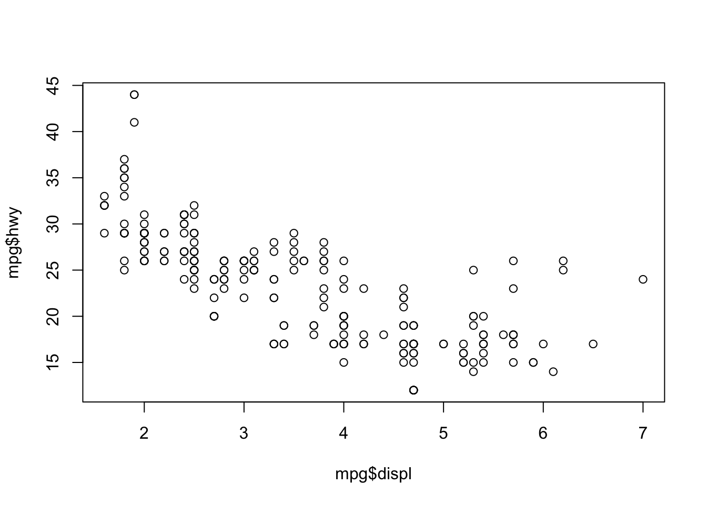

These are my notes from the University of Oregon’s Data Service Consultants workshop on ggplot2, part 2. Cameron Mulder ran this workshop. He can be contacted via U of O’s consultation page.

1. Set Up
For this post we used the following packages:
ggplot2: to create nice looking plots.
magrittr: to pipe
%>%.dplyr: to use
filter().flametree: to make art.
ozmaps: to make Australian Maps.
rmapshaper: to use
ms_simplyfyto simplify polygons.plotly: to create interactive plots.
library(ggplot2)
library(magrittr)
library(dplyr)
library(flametree)
library(ozmaps)
library(rmapshaper)
library(plotly)And the following data sets:
cars
BOD(Biochemical Oxygen Demand)
data("cars")
data ("BOD")2. ggplot2 Review
To start we made a simple point plot using the cars data set.
Note: ggplot(data= <DATA>, mapping = aes(<MAPPING>))+ <GEOM FUNCTION>()
ggplot2::ggplot(data = mpg, mapping = ggplot2::aes(x = displ, y = hwy)) +
ggplot2::geom_point()
We can compare this to a simple plot in base R.
Note : the $ is how we id the specific variable we are wanting to work with.
base::plot(mpg$displ, mpg$hwy)
3. Line Graph
Starting with base R:
Note: help(pressure) is the same as ?pressure
base::plot(pressure$temperature, pressure$pressure, type = "l")
# add points
graphics::points(pressure$temperature, pressure$pressure)
# add lines (and points)
graphics::lines(pressure$temperature, pressure$pressure/2, col = "red")
graphics::points(pressure$temperature, pressure$pressure/2, col = "red")
ggplot:
ggplot2::ggplot(pressure, ggplot2::aes(x = temperature, y = pressure)) +
ggplot2::geom_line() +
ggplot2::geom_point() +
ggplot2::geom_line(ggplot2::aes(x = temperature, y = pressure/2), color = "red") +
ggplot2::geom_point(ggplot2::aes(x = temperature, y = pressure/2), color = "red") 
4. Bar Graphs
Base R:
graphics::barplot(BOD$demand, names.arg = BOD$Time)
graphics::barplot(base::table(mtcars$cyl))
ggplot2:
ggplot2::ggplot(BOD, ggplot2::aes(x = base::factor(Time), y = demand)) +
ggplot2::geom_col()
Notice that the 6 isn’t there because of factor().
Note : geom_bar does counts, but column has the height of the bar based on the data.
ggplot2::ggplot(mtcars, aes(x=cyl)) +
ggplot2::geom_bar()
5. Histogram
Base R:
graphics::hist(mtcars$mpg, breaks = 4)
ggplot2:
ggplot2::ggplot(mtcars, ggplot2::aes(x=mpg)) +
ggplot2::geom_histogram(binwidth = 4)6. Boxplot
Base R:
base::plot(ToothGrowth$supp, ToothGrowth$len)Base R: Formula Syntax
base::plot(len ~ supp, data = ToothGrowth)
base::plot(len ~ supp + dose, data = ToothGrowth)

ggplot2:
ggplot2::ggplot(ToothGrowth, ggplot2::aes(x= supp, y = len)) +
ggplot2::geom_boxplot()7. Time Series
ggplot2 will automatically recognize the variable as a date as long as the variable is imported as a date.
To start create some dummy data:
data <- base::data.frame(
day = base::as.Date("2017-06-14")-0:364,
value = stats::runif(365)
)
utils::head(data) day value
1 2017-06-14 0.89607719
2 2017-06-13 0.67512345
3 2017-06-12 0.04422019
4 2017-06-11 0.53241860
5 2017-06-10 0.54535734
6 2017-06-09 0.84927785Then plot it with ggplot2:
ggplot2::ggplot(data, ggplot2::aes(x = day, y = value)) +
ggplot2::geom_line()Now to make a plot with the economics data set which is included in ggplot2.
ggplot2::ggplot(data = economics, ggplot2::aes(x = date, y = pop)) +
ggplot2::geom_line()Next create a subset of the data from 2006 and beyond:
subset <- ggplot2::economics %>%
dplyr::filter(date>base::as.Date("2006-1-1"))Now to create a different line graph of the subset data over time where the size of the line is based on the value of unemployment (which is the number of unemployment in thousands).
ggplot2::ggplot(economics, ggplot2::aes(x = date, y = pop)) +
ggplot2::geom_line(ggplot2::aes(size = unemploy), color = "red")8. Maps
Using map_data() get lat and long data for counties in Oregon:
or_counties <- ggplot2::map_data("county", "oregon") %>%
dplyr::select(lon = long, lat, group, id = subregion)
utils::head(or_counties) lon lat group id
1 -117.2042 44.30683 1 baker
2 -117.4907 44.30683 1 baker
3 -117.4907 44.38704 1 baker
4 -117.5366 44.42142 1 baker
5 -117.5709 44.42142 1 baker
6 -117.5996 44.43861 1 bakerUsing or_counties data create a ggplot2 map:
ggplot2::ggplot(or_counties, ggplot2::aes(lon, lat, group = group))+
ggplot2::geom_polygon(fill = "white", color = "grey") +
ggplot2::coord_quickmap()
Using ozmap_states get the names of the different states in Australia.
oz_stats <- ozmaps::ozmap_states
oz_statsSimple feature collection with 9 features and 1 field
Geometry type: MULTIPOLYGON
Dimension: XY
Bounding box: xmin: 105.5507 ymin: -43.63203 xmax: 167.9969 ymax: -9.229287
Geodetic CRS: GDA94
# A tibble: 9 × 2
NAME geometry
* <chr> <MULTIPOLYGON [°]>
1 New South Wales (((150.7016 -35.12286, 150.6611 -35.11782, 150.6…
2 Victoria (((146.6196 -38.70196, 146.6721 -38.70259, 146.6…
3 Queensland (((148.8473 -20.3457, 148.8722 -20.37575, 148.85…
4 South Australia (((137.3481 -34.48242, 137.3749 -34.46885, 137.3…
5 Western Australia (((126.3868 -14.01168, 126.3625 -13.98264, 126.3…
6 Tasmania (((147.8397 -40.29844, 147.8902 -40.30258, 147.8…
7 Northern Territory (((136.3669 -13.84237, 136.3339 -13.83922, 136.3…
8 Australian Capital Territory (((149.2317 -35.222, 149.2346 -35.24047, 149.271…
9 Other Territories (((167.9333 -29.05421, 167.9188 -29.0344, 167.93…Then create a ggplot2 map of Australia:
ggplot2::ggplot(oz_stats)+
ggplot2::geom_sf() +
ggplot2::coord_sf()Next we remove the “Other territories”, and create a multi-polygon data set of Australian Bureau of Statistics.
oz_stats <- ozmaps::ozmap_states %>%
dplyr::filter(NAME != "Other Territories")
oz_votes <- rmapshaper::ms_simplify(ozmaps::abs_ced)Then create another map of Australian territories:
ggplot2::ggplot()+
ggplot2::geom_sf(data = oz_stats, mapping = ggplot2::aes(fill = NAME)) +
ggplot2::geom_sf(data = oz_votes, fill = NA) +
ggplot2::coord_sf()9. Plotly
An interactive graph of the iris data:
fig <- plotly::plot_ly(data = iris, x = ~Sepal.Length, y = ~Petal.Length)
figAn interactive plot of the cars data set:
mpg %>% plotly::plot_ly(x = ~displ, y = ~mpg, color = ~class)Note: you can double click on the legend to see a subset of the data.
Another plot with ggplot2:
plot <- ggplot2::ggplot(mpg, ggplot2::aes(x = displ, y = hwy)) +
ggplot2::geom_point(mapping = aes(color = class)) +
ggplot2::geom_smooth()
plot
Use ggplotly to make it interactive:
plotly::ggplotly(plot)10. Art
shades <- c("blue", "green", "red", "orange")
data <- flametree::flametree_grow(time = 10, trees = 10)
data %>% flametree::flametree_plot(
background = "white",
palette = shades,
style = "nativeflora"
)Package by Danielle Navarro. Check out her art.